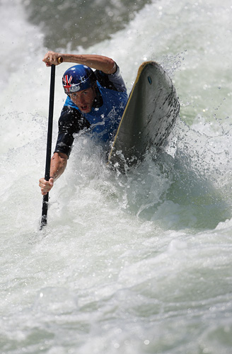
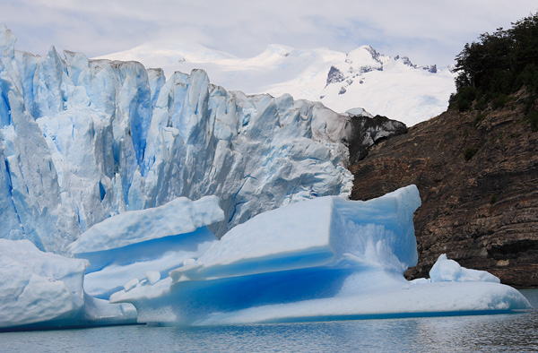
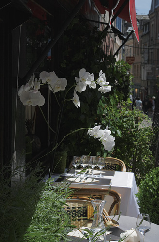
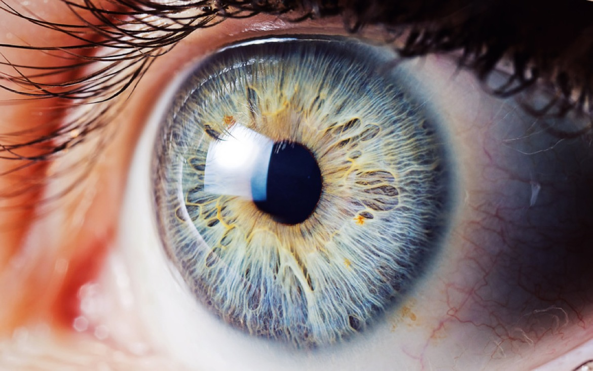

The Standard Picture Style is set to produce the vivid colors and contrast level that people tend to prefer for general photographic subjects. It provides the optimal sharpness for printing image without post-processing and makes it possible to produce beautifully finished prints for a broad array of subjects, from snapshots to sports shooting, with no retouch.
The Standard Picture Style is the default Picture Style setting for all present EOS DIGITAL lineups. Color uniformity is ensured, even if the model changes.

People are one of the most difficult subject to reproduce photographically because skin color can vary significantly depending on lighting conditions and exposure balance. The Portrait Picture Style adjusts the color tone magenta-to-yellow close to red range and adds brightness. Skin color is reproduced light pink with still the correct exposure. It is particularly well-suited for shooting women and children. To keep the soft and natural feeling of skin, sharpness is set modestly.

In photographic expression, deep blue sky and vibrant green leaves call for more vivid colors than in reality, for more impressive finish. The Landscape Picture Style changes the color respectively; blue to a vivid and deep color, green to a vivid and bright color.
This style also uses a stronger sharpness setting to bring out details in mountains, trees, buildings, and other things in the distance. A moving sight can be expressed in the strong impressive finish.

The Neutral setting is suitable for expressing subtle nuances within vivid colors, even for objects with considerable contrast, when wishing to convey delicate textures.
Contrast and saturation settings are moderated, so there is less risk of overexposure and color saturation compared to other styles, resulting in a more restrained and calmer expression.
Richer detail is retained as data, so corrections can easily be rendered using Digital Photo Professional or Adobe® Photoshop®, etc. for JPEG output as well.

Macro photography (or photomacrography[1][2] or macrography,[3] and sometimes macrophotography[4]),
is extreme close-up photography, usually of very small subjects and living organisms like insects,
in which the size of the subject in the photograph is greater than life size (though macrophotography
technically refers to the art of making very large photographs).[3][5] By the original definition,
a macro photograph is one in which the size of the subject on the negative or image sensor is life size or greater.
[6] However, in some uses it refers to a finished photograph of a subject at greater than life size.[7]